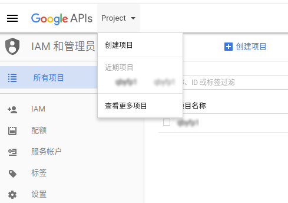
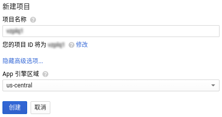
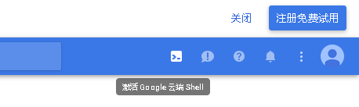
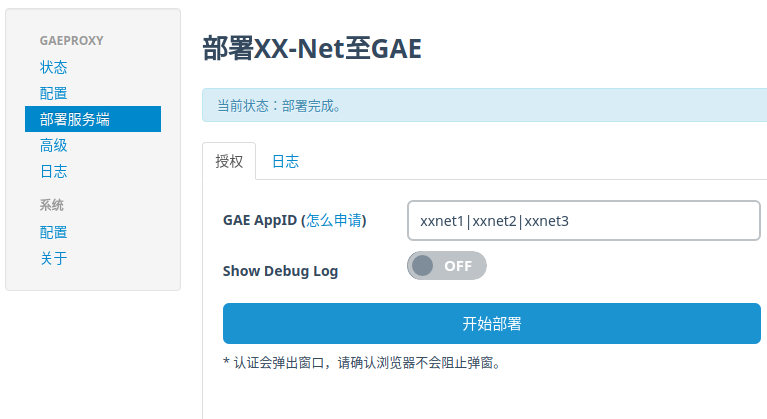
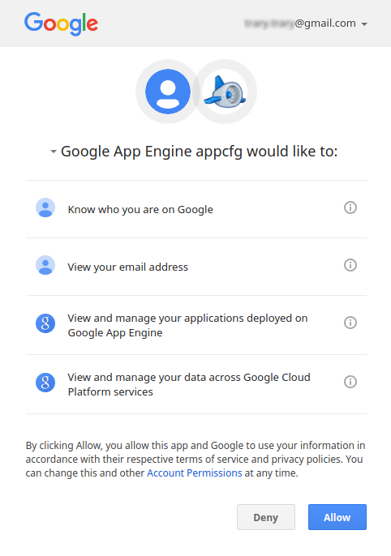
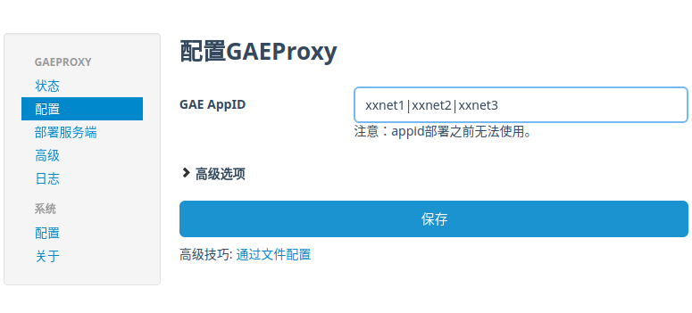
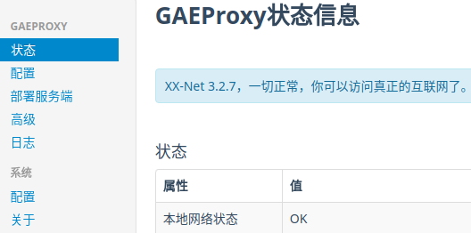

XX-Net 私有站点部署
2017-3-30 13:41:55 by 郭某某
1、登录Google帐户
①、https://www.google.com/ncr (若无帐户，需注册，若注册失败，可能需要更换线路或梯子)
2、创建AppID
①、打开https://console.developers.google.com，左击顶部 Project，然后左击创建项目 ②、输入项目名称后，会自动帮你匹配可用ID，然后左击创建(请细读此教程底部说明) 
③、2016年12月后新注册用户部署AppID出现404错误的请转至设置AppID的App引擎解决相应问题
3、设置AppID的App引擎
①、进入 https://console.cloud.google.com/start，点击 Project 、创建项目，记下您的项目id，点击创建。 ②、点击搜索框右边的按钮激活云端shell，页面底部会出现黑底白字，输入 【gcloud config set project YOURID】，将前面的YOURID替换为您的项目id ，按下键盘的enter键，然后输入 【gcloud beta app create --region us-central】 ，再按一次enter。
③、当底部出现 Success! The app is now created. Please use 'gcloud app deploy' to deploy your first app. 时，创建appid成功。此时可以重复前面两步，创建更多的appid
4、部署服务端
①、打开XX-Net的设置页：，切换到部署服务端②、输入AppID后，左击开始部署，会弹出授权窗口 
③、左击Allow，然后就会进行服务端的部署

④、部署完成后，切换到配置，输入部署好的AppID后左击保存 
⑤、切换到状态来确认状态

说明
①、每个AppID每天1G流量，一般每个Google帐户最多12个AppID②、AppID的数量只影响流量，不影响速度
以上内容参考XX-Net鸣谢！
附：XX-Net下载地址